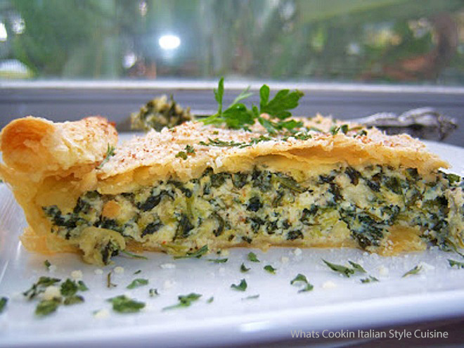

Broccoli Pie
Recipe
On this webpage you will find the recipe for our cheesy broccoli pie that we found in partnership with Allrecipes.com! Broccoli pie can come in many shapes and sizes, such as a French quiche, however we will be sticking to a more traditional American style. We do recommend that you serve this dish warm & on a cold day, perhaps alongside our creamy broccoli soup recipe! The measurements for this recipe will be at the bottom of the page. Firstly, preheat your oven to 200 degrees C (400 F) as you prepare to boil your water. Placing the broccoli in a steamer basket over the boiling water, this will allow it to be tender but still be firm. This should be done for about 5 minutes. Next, mix your Cheddar cheese (or your preferred cheese), flour, salt and mustard in a bowl. Add and mix in your butter until evenly moist, pressing into the bottom sides for an 8 inch pie dish. Melt 1 tablespoon of butter on a skillet over medium heat, sauteing the mushrooms and onions until tender. Stir in 2 tablespoons of flour, 1 teaspoon of salt and nutmeg. Bring this to a boil and cook for about a minute. After this, you will want to remove from the heat and mix in your steamed broccoli, stirring in your eggs gradually. Transfer this to the pie crust and bake for 15 minutes in your oven.
Ingredients
- Fresh Broccoli, chopped
- 1 cup of your preferred cheese
- 3/4 cup all purpose flour
- Half a teaspon of salt
- Half a teaspoon of dry mustard
- 1/4 cup of butter, melted
- 1 tablespoon butter
- 1 onion, chopped
- 1/4 pound of fresh mushrooms, sliced
- 2 table spoons of all purpose flour
- 1 cup cream
- 1 teaspoon of salt
- 1/4 teaspoon ground nutmeg
- 3 eggs, beaten
In collabaration with other websites, we can highly recommend these three recipes to try as well! Betty Crocker, Taste of Home & Dinner and Dessert That is all from us, we hope you enjoyed this recipe and let us know your thoughts on it on our social media!

This information was provided by the courtesy of allrecipes.com